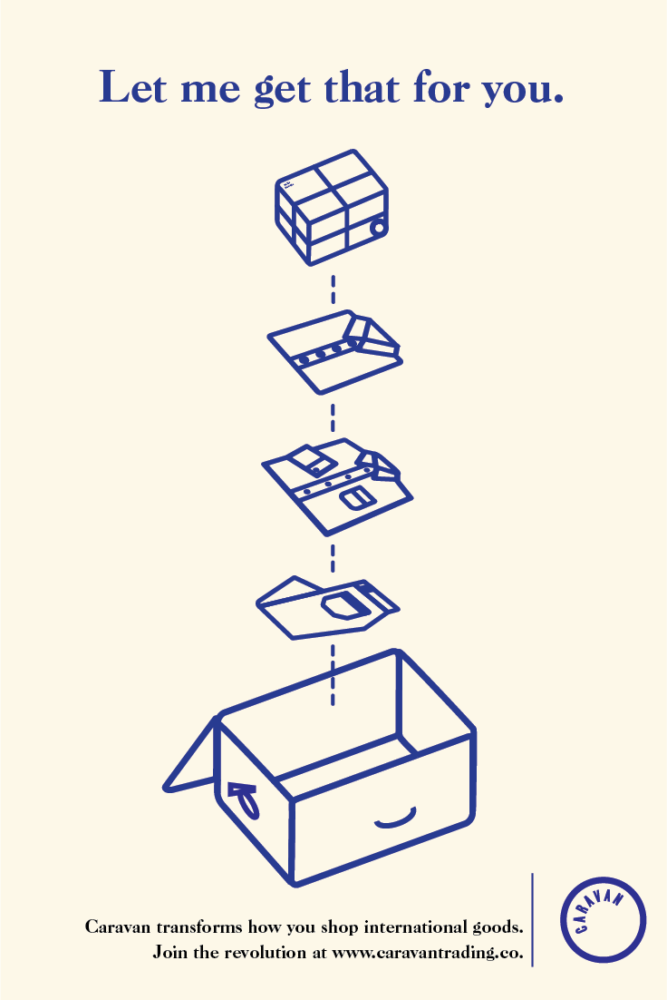
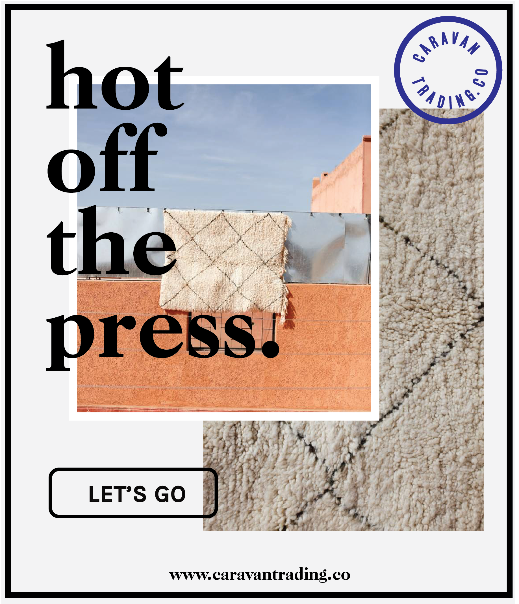

In May of 2016, I embarked on an international summer: Morocco in June, and India for July and August. For a frugal fashionista, it was a dream: woven baskets, dyed pants, pom pom rugs, leather slippers-- all for local prices. I packed back two suitcases full of
treasures and headed home, where everyone was asking where and how I scored them. People were inevitably disappointed when I told them I found them abroad, and thus the idea for Caravan was born.
You shouldn't have to travel to have access to the beautiful goods around the world;
67 million people are already traveling for you every year. Caravan allows travelers around the world to bring back the goods you want from the places they visit. It can be a small world after all!

We thought through the branding meticulously, and decided on these designs for postcards to include in each package.


Some ads designed to run on pinterest or email campaigns.